Table of Contents
Resolution of encoding (CSC) conflicts
!!! UNDER CONSTRUCTION !!!
!!! UNDER CONSTRUCTION !!!
!!! UNDER CONSTRUCTION !!!
A common issue in synthesis of speed-independent circuits from Signal Transition Graphs (STGs) are encoding conflicts, a.k.a. Complete State Coding (CSC) conflicts. Detection and resolution of CSC conflicts is an important part of the design process.
What are CSC conflicts?
CSC conflicts arise when two semantically different (i.e. enabling different output or internal signals) reachable states have the same encoding, i.e. the same values of all the signals. For example, consider the following STG specifying the read phase of the VME bus controller.
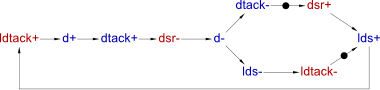
One can see the conflicting states at the level of the state graph of this STG, which can be generated via the Conversion→Finite State Transducer [Petrify] menu, and is shown below (after some manual layout). Note that the encoding of each state is given in its label (after '_') with the following order of signals: dsr, ldtack, d, dtack, lds.
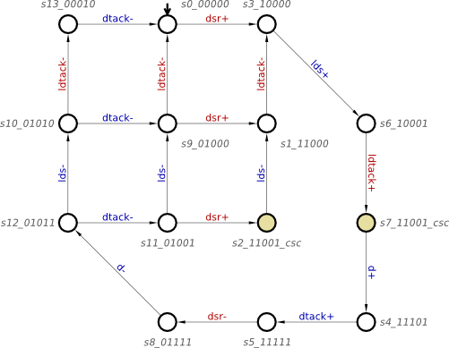
The two highlighted states have the same encoding, 11001, but are semantically different: in one of them the circuit must produce d+ and is not allowed to produce lds-, and in the other the circuit must produce lds- and is not allowed to produce d+. Since the circuit can only 'see' the signal values but not the tokens in the STG, these two states are indistinguishable from its point of view, and so the specification is not directly implementable – one has first to resolve this CSC conflict by transforming the STG.
Automatic resolution of CSC conflicts
In most practical cases CSC conflicts can be resolved automatically, via the Tools→Encoding conflicts→Resolve CSC conflicts [Mpsat] or Tools→Encoding conflicts→Resolve CSC conflicts [Petrify] menu items. For the VME bus controller STG shown above, both MPSat and Petrify happen to generate essentially the same solution:
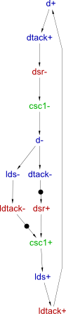
The state graph of this STG is shown below (after manual layout). Note that the binary encodings of the states have one extra bit now corresponding to the newly inserted signal (this is the last bit in the encodings). The two highlighted states correspond to the conflicted states of the original STG – one can see that now their encodings differ in the last bit and so the CSC conflict disappears. Intuitively, the newly inserted signal introduces extra memory into the circuit, helping it to trace its current state and disambiguate the previously conflicted states.
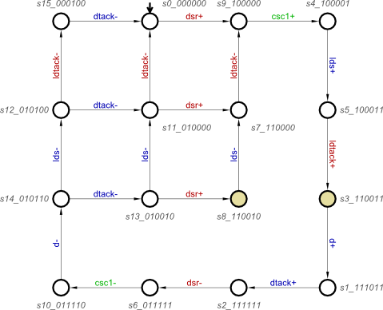
Once the encoding conflicts are resolved, several kinds of circuit implementations can be automatically synthesised by the Petrify or MPSat back-ends (via the Synthesis menu):
- complex-gate implementation;
- generalised C-element (gC) implementation;
- standard C implementation.
E.g. for the former, the following next-state functions for the output and internal signals are automatically derived:
[d] = csc1 ldtack; [dtack] = d; [lds] = d + csc1; [csc1] = dsr (ldtack' + csc1);
The total number of literals in the right-hand side of these equations is 8 – this intermediate metrics is often used for evaluating the quality of the CSC resolution process before technology mapping. The circuit corresponding to these equations is shown below (after manual layout). Note that the gate with feedback implements csc1, and that the implementation of dtack is a buffer gate – it's just a wire.
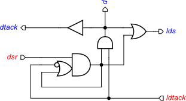
Exercise 1
Download the following STG from [1]: SRAM controller (MASTER). (9.02 KiB, 1M ago):
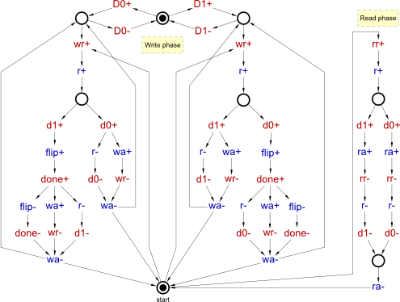
- Automatically resolve the encoding conflicts in it using the Tools→Encoding conflicts→Resolve CSC conflicts [MPSat] and Tools→Encoding conflicts→Resolve CSC conflicts [Petrify] menu items. Save the results as
sram-master-csc-mpsat.workandsram-master-csc-petrify.work. - Synthesise the complex-gate implementations of these two STGs, noting the number of literals in each case (can be found in the Output window).
Manual resolution of CSC conflicts (if you cannot help it)
As explained above, the resolution of CSC conflicts is automated, and the tools generally do a good job. However, there are some rare situations when manual resolution is used, e.g.:
- for personal enlightenment you wish to learn about CSC conflicts and techniques that can be used for their resolution;
- you have a lot of time, and the process for you is more important than its outcome
 ;
;
- automatic resolution failed, so you have no choice;
- you are an experienced designer, and have reasons to believe that some potentially dangerous transformations like concurrency reduction may improve your circuit so considerably that you are willing to take the risk of shooting yourself in a foot.
If you do not fall into any of the above categories, you should be content with automatic resolutions of encoding conflicts and skip the rest of this tutorial. Otherwise you are welcome to the shady world of tools' internals, with many dark corners, strange heuristics, dangerous transformations, and unsavoury hacks…
For manual resolution, the conflicts have to be
- detected – this is fully automated;
- visualised – two kinds of visualisation are explained below: at the level of state graphs (works only for toy examples) and at the level of STGs;
- resolved – several commonly used ways of resolving CSC conflicts are briefly explained below.
Visualisation of CSC conflicts
Workcraft supports two ways of visualising encoding conflicts:
- highlighting conflicting states in the state graph;
The former approach only works for toy examples where the state graph is small enough to fit on a screen and to be comprehensible for a human. However, for more realistic examples state graphs tend to be large as the number of reachable states is often exponential in the size of the STG, especially if the STG has a lot of concurrency (this is the well-known state space explosion problem, a.k.a. state explosion problem). The recommended visualisation technique is based on conflict cores – it works directly with the STG and so is much more human-friendly.
Visualisation of CSC conflicts at the level of state graphs
An example of this kind of visualisation is shown above for the VME bus controller example. The idea is to highlight the conflicted states in the state graph with the same colour (i.e. each conflicted encoding gets its own colour). To build the state graph of the STG and highlight the conflicted states, use the Conversion→Finite State Transducer [Petrify] menu.
There are two main problems with this kind of visualisation:
- the state graph may be too large to be of any use for a human;
- even if the state graph is of moderate size, it is difficult to see how one can transform the original STG to resolve the conflicts.
To illustrate these problems, consider the following examples. The following STG specifies a 4-way paralleliser: in response to the parent handshake r / a it initiates four child handshakes in parallel:
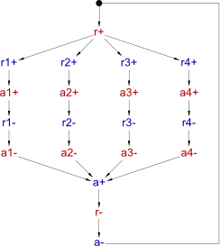
Though this STG is very small and comprehensible, due to high concurrency its state graph is large (628 states) and is of limited utility for humans:
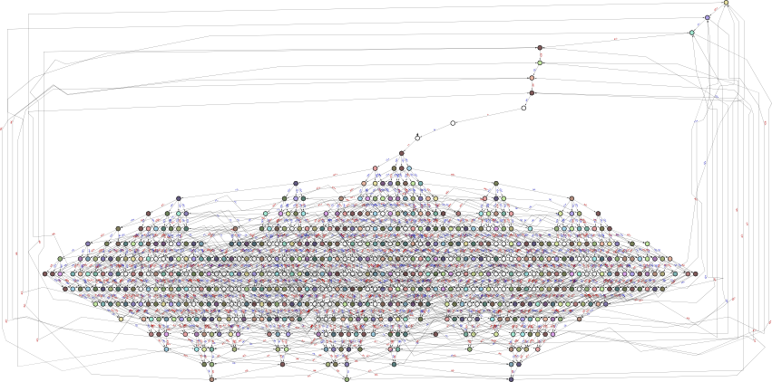
The following STG specifies a part of an A2D converter [5].
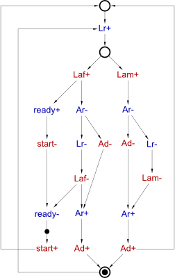
The corresponding state graph is not particularly large, but there are several CSC conflicts and it is not straightforward by looking at it to understate the causes of these conflicts and to find transformations resolving them:
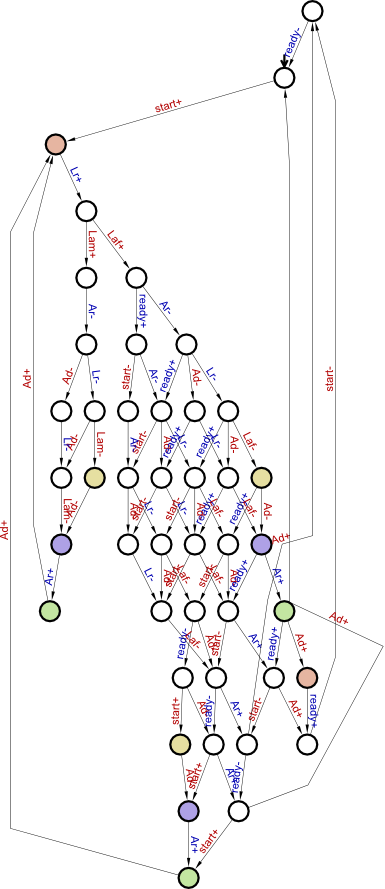
Visualisation of CSC conflicts at the level of STGs
An alternative and recommended method of visualising encoding conflicts is based on showing the conflict cores in the STG [2] [3] [4]. Consider the VME bus controller STG shown above. The two conflicted states can be reached from the initial state by the following two traces:
dsr+, lds+, ldtack+
dsr+, lds+, ldtack+, d+, dtack+, dsr-, d-, dtack-, dsr+
By taking the difference of two traces we get a set of transitions forming a conflict core shown below. To see it in Workcraft, use the Verification→Complete State Coding (all conflicts) [MPSat] menu and then select Show selected cores in the Tool controls panel.
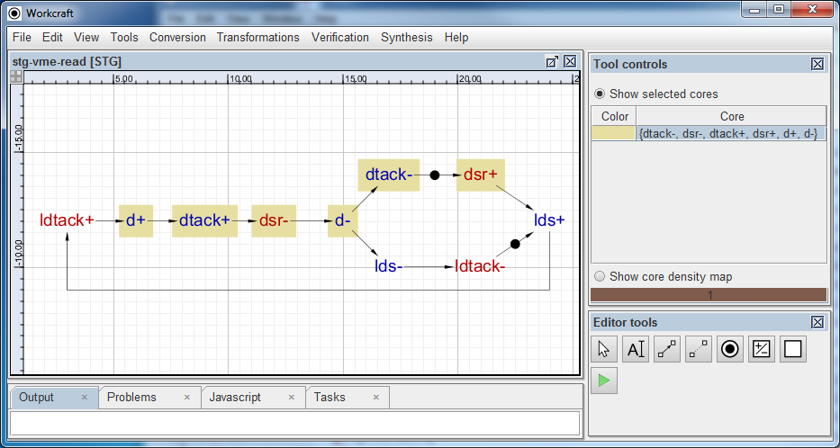
Note that this core has several important properties helping the user to understand the cause of the conflict and find ways to resolve it:
- the states just before and just after the core are in encoding conflict;
- the numbers of
s+ands-transitions in the core are the same for each signalsas the states just before and just after the core have the same encoding; - if the transformation upsets this balance of signals in the core (e.g. csc+ is inserted somewhere inside the core and csc- is inserted somewhere outside the core) then the associated conflicts become resolved.
The core map for the 4-way paralleliser is as follows. Note that it is much more comprehensible than the state graph: Each concurrent branch has a single conflict core inside it, and one can resolve these cores e.g. by inserting the rising transitions of four new internal signals into these cores, and the corresponding falling transitions outside of these cores.
Each core is given a different colour. If there are several cores, it is possible to show any subset of them by selecting the required cores in the Tool controls panel.
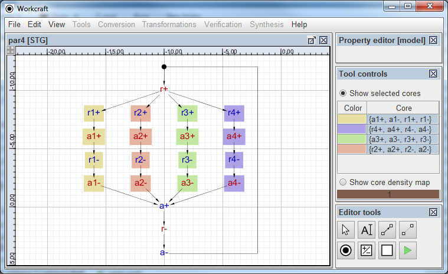
The core map corresponding to the A2D controller example is shown below on the left. Note that in this case there are five cores, some of which overlap (and so some of the transitions are highlighted with several colours as they belong to several cores). Core overlaps can be exploited during the resolution process – by inserting csc+ into the overlap of several cores one can destroy these cores, killing several birds with one stone. Furthermore, one can insert csc- into some of the remaining cores, increasing thus the number of birds killed by the same stone.
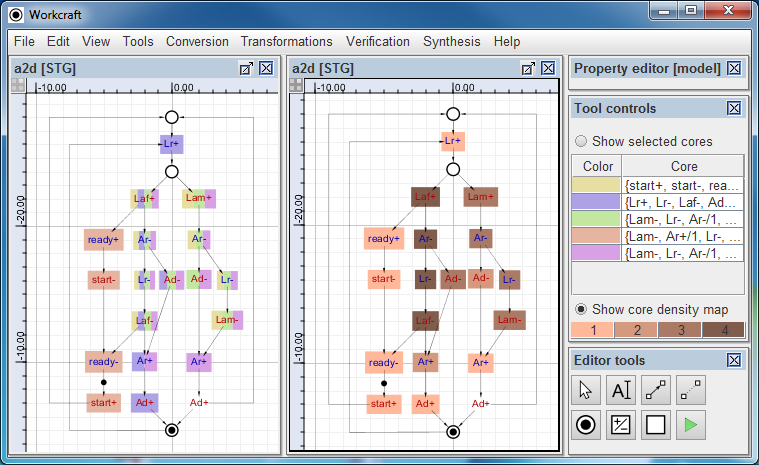
When there are multiple overlapping cores, one can quickly identify the promising areas where a signal insertion (or some other transformation) would eliminate as many encoding conflicts as possible by considering the core density map – for the A2D controller example it is shown above on the right. The idea is to count how many cores a transition belongs to, and the higher this number is, the darker is the shade used to highlight this transition. The analogy is with a topographic map where darker shades show higher altitudes – the 'peaks' with the darkest shade are good areas where a single signal insertion can eliminate the maximum number of cores. E.g. in the A2D controller example the highest peak is formed by the transitions Laf+, Ar-, Lr- and Laf- that belong to the same four cores. Hence inserting csc+ somewhere in this peak eliminates these four cores. The remaining core can be also eliminated if csc- is inserted into it, i.e. all the encoding conflicts in this example can be resolved by a single signal insertion.
| 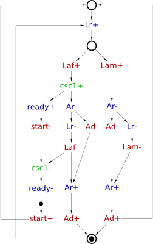 |
| MPSat solution |
| 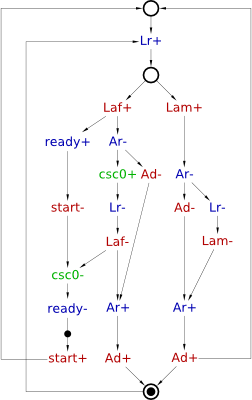 |
| Petrify solution |
The above STGs show two alternative signal insertions resolving all the conflicts with a single new internal signal in the A2D converter. They were derived automatically by the MPSat and Petrify back-ends, accessible via the Tools→Encoding conflicts→Resolve CSC conflicts [MPSat] and Tools→Encoding conflicts→Resolve CSC conflicts [Petrify] menu items. The complex-gate implementations corresponding to the resulting two STGs are as follows:
// MPSat: 14 literals [Ar] = (Laf' + csc1') (Ad' + Ar) Lam' [Lr] = Ar (Ad start csc1' + Lr) [ready] = csc1 [csc1] = start csc1 + Laf
// Petrify: 15 literals [Ar] = Laf' Lam' (Ar + Ad'); [Lr] = csc0' (Ad Ar start + Laf); [ready] = csc0 + Laf; [csc0] = Ar' Laf + csc0 start;
Note that MPSat's solution is smaller, but Petrify's solution has more concurrency.
MPSat and Petrify are different back-end tools that perform the actual resolution of CSC conflicts. These tools use different methods and somewhat different cost functions, so it makes sense to try both of them and then choose the solution that better fits the designer's goals (in terms of area, performance, etc.).
Transformations for resolving encoding conflicts
Below several ways of resolving encoding conflicts are outlined. They are all supported by tools, with various levels of automation. It is difficult to beat the tools on their own field, as they employ advanced techniques and use complicated cost functions that would be difficult for humans to compute. However, the human designer has information and capabilities that are not available to the tools, in particular the high-level understanding of the design, the possibility to change the contract between the circuit and the environment (and re-design the latter if required), etc. So you need to think “outside the box” to beat the tools.
Signal insertion
Severity level: Paracetamol
New internal signals can be added to the STG in such a way that its external behaviour (i.e. the 'contract' with the environment) stays unchanged. These internal signals add memory to the circuit helping it to trace its current state. The encodings of the states get longer due to the new signals, which helps to disambiguate the states that previously had the same encodings.
When inserting a new internal signal, say csc, one has to make sure that:
- no input is directly delayed (triggered) by the transitions of
csc, as this is not implementable (the environment is oblivious to internal signals); - the consistency is not violated, i.e. the rising and falling edges of
cscalternate in every execution, always starting from the same edge; - the output-persistency is not violated, i.e.
cscmust not disable or be disabled by any other signal; cscresolves some encoding conflicts;- when inserting a transition, say
csc-, outside the core, make sure that it is not adjacent to the core, i.e. there are some other transitions separating the core fromcsc-(otherwise the core will suckcsc-in and re-appear with bothcsc+andcsc-inside it).
In addition to these, one should try to heuristically optimise the final implementation, as the way the signals are inserted affects the quality of the resulting circuit very significantly. Note, however, that “the quality of the circuit” cannot be defined at this point, as an STG with CSC conflicts is not directly implementable. However, various heuristics for signal insertions are known to be beneficial, e.g.:
- increasing the number of resolved cores;
- reducing the number of transitions of
csc; - sequential insertions of transitions of
cscoften result in a smaller circuit with less concurrency, whereas concurrent insertions result in a more concurrent operation at the expense of the area (it is important to note that this more concurrent operation does not necessarily improve the performance of the circuit, as the more complicated implementation imposes additional overheads); - reducing the number of signals triggering or triggered by
cscoften leads to a simpler implementation ofcscand those signals (one can also replace one or more triggers of some signal bycsc); - locking
cscwith some existing signals (two signals are called locked if their transitions alternate in every execution).
Examples and techniques for signal insertion have already been presented above. Considerations when using signal insertion:
- behaviour is preserved and so the contract with the environment stays the same
 ;
;
- inserted signals have to be implemented, i.e. the logic becomes more complicated
 .
.
When trying to resolve encoding conflicts by signal insertion you will be competing with the tools on their own field (as the contract with the environment is unchanged, no insight that is not already available to the tool is exploited), and so are unlikely to significantly improve the automatically generated solution. As an example, consider the (very simple) VME bus controller STG above. MPSat backend reports 18 (!) different ways of resolving the encoding conflict by inserting a single signal, and heuristically chooses the best one. How many of these can you find? For more complicated examples the number of ways to insert a signal grows very fast, and the tool will have an edge over the human designer.
Exercise 2
For the STG in Exercise 1:
- Visualise the conflicts using the Verification→Complete State Coding (all cores) [MPSat] menu item.
- Meditate on the cores map and the core density map until you understand the causes of the encoding conflicts.
- Manually resolve the encoding conflicts by signal insertion as explained above. Make sure that no input is delayed by the newly introduced signals, and that the consistency is not violated – the latter can be verified with the help of Verification→Consistency [MPSat] menu item.
- After all the conflicts are resolved, synthesise the complex-gate implementation using the Synthesis→Complex gate [MPSat] menu item.
- Compare the number of literals in your solution with those in Exercise 1. If yours is significantly worse, repeat the previous two steps inserting signals differently, until you are either happy with your solution or frustrated and cannot be bothered any more.
Concurrency reduction
Severity level: Antibiotic
Another commonly used transformation for resolving CSC conflicts is concurrency reduction (CR) [6]. The idea is to sequentialise some concurrent transitions in the STG by introducing new arcs, in such a way that some of the conflicted states become unreachable. This may or may not decrease the performance: note that the loss of concurrency may be more than offset by simpler logic in some cases.
This transformation may change the behaviour of the STG in significant ways, and break the contract with the environment! It is up to the designer to ensure that the modified STG still makes sense, and that the environment either can cope with the changed contract or is re-designed for the modified contract – the tools do not have sufficient information / capability to make these kinds of decisions.
A possible CR resolving the encoding conflict in the VME bus controller is shown below. The amber arc orders two previously concurrent STG transitions, pulling lds- into the core, which breaks the balance and destroys the core.
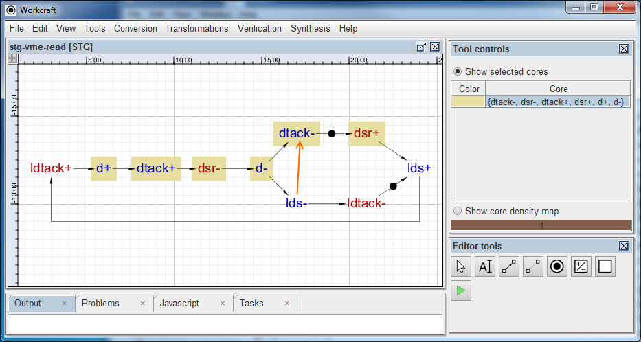
The semantics of CR arcs coincides with that of usual arcs, but it is convenient for the designer to see which arcs were original and which were added later for various technical reasons, so CR arcs are highlighted as thick amber arcs.
The state graph after this CR is shown below: Two of the formerly reachable states have become unreachable (they are faded out in the picture). One of these states used to be involved in an encoding conflict, and so eliminating this state resolves the conflict.
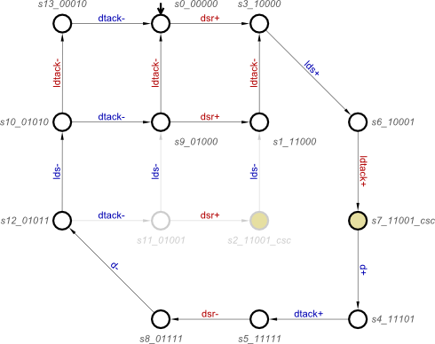
The resulting complex-gate implementation has 10 literals, which happens to be worse than the solution obtained using signal insertion.
[d] = ldtack dsr lds; [dtack] = dtack lds + d; [lds] = dsr (lds + ldtack') + d;
However, often CR results in smaller circuits than signal insertion as for the latter the newly inserted signals have to be implemented.
We distinguish a special kind of innocuous CRs, which do not introduce any extra causal dependencies on the inputs, i.e. if the original STG could produce some output at some state, the modified STG in the corresponding state will be able to produce this output too, perhaps after firing some other outputs first, but without waiting for any inputs from the environment. For example, suppose the original STG at some state could produce outputs o1 and o2 concurrently, i.e. in any order, and the applied CR fixes this order to o1 → o2. Since the original environment was prepared to receive these outputs in any order, fixing the order will do no harm. In other words, innocuous CRs modify the contract with the environment in a safe way: they do not make any extra assumptions about the environment, but provide more guarantees to it (about the order of transitions). Hence, the modified STG will work correctly in any environment in which the original STG would have worked correctly.
All the other CRs are called risky – they require extra assumptions about the environment and have to be vetted by both the designer of the STG and the designer of the environment.
For example, the CR used in the VME bus controller STG above is innocuous: since the environment formerly was prepared to receive lds- and dtack- in any order, fixing this order to lds- → dtack- is harmless. An alternative (and highly problematic!) way to apply CR to resolve the conflict in VME bus controller is shown below.
This CR is risky (i.e. not innocuous according to the above definition) as it changes the contract with the environment in a dangerous way: the modified STG waits for the environment to supply ldtack- before it can produce dtack-. If the environment in turn waits for dtack- before sending ldtack- (e.g. because the designer next-door used CR to resolve some encoding conflicts in the environment without checking with you  ), a deadlock ensues. However, even if that is not the case, there is a higher-level problem with this CR, which cannot be automatically detected even in principle: The applied CR pulls both
), a deadlock ensues. However, even if that is not the case, there is a higher-level problem with this CR, which cannot be automatically detected even in principle: The applied CR pulls both lds- and ldtack- into the core, which completely sequentialises the behaviour (the transitions become totally ordered) and destroys the VME bus controller's purpose in life (which is to ensure concurrent operation of the bus and the device interacting with the controller).
The complex-gate implementation has only 7 literals, which is smaller than any of the implementations above, but, as explained, it is totally useless (other then as an illustration of CR pitfalls).
[d] = dsr ldtack; [dtack] = dtack ldtack + d; [lds] = d + dsr;
The following two schematic pictures show how to resolve encoding conflicts using CRs [3] [4]. The idea is to pull one or more existing transitions into the core, upsetting its balance and thus eliminating it.
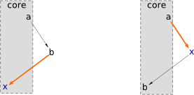
In the presence of choices, the CRs may be more complicated, as illustrated below [3] [4]. An extra place may be necessary in such a case to handle all the branches of the choice to avoid violating the consistency of the STG. (This case is mentioned here for completeness, but we do not use such CRs in the rest of the tutorial.)
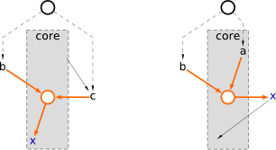
 [ explain the -r option of MPSat? ]
[ explain the -r option of MPSat? ]
Four alternative ways to use CR to resolve the encoding conflicts in the A2D example are shown below – only one (any) of the four amber arcs is added. The reason any of these CRs resolves all the conflicts is interesting:
ready+and perhaps alsostart-are pulled into the overlap of four cores (forming the highest peak) and destroy these four cores;- at the same time,
Lr-,Laf-, and perhapsAr-are pulled into the remaining core destroying it too.
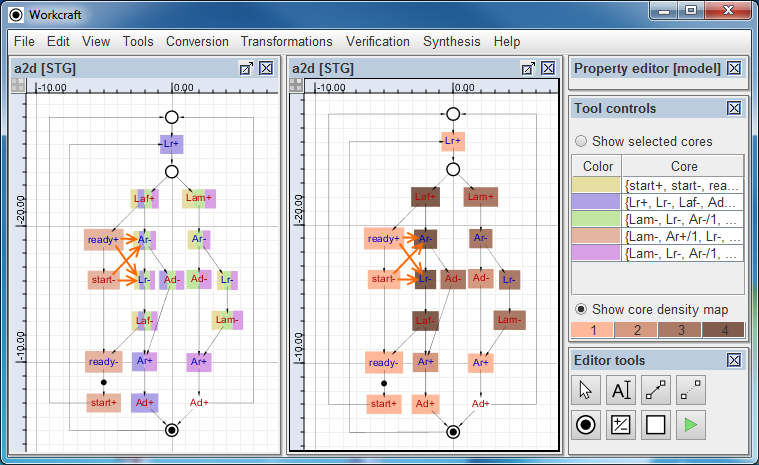
// innocuous CR: ready+ -> Ar-; 14 literals [Ar] = (Lam' ready' + Laf' ready) (Ar + Ad'); [Lr] = Ar (Ad ready' start + Laf); [ready] = ready start + Laf;
// innocuous CR: ready+ -> Lr-; 14 literals [Ar] = Laf' Lam' (Ar + Ad'); [Lr] = ready' (Ar Ad start + Laf) + Laf Ar; [ready] = ready start + Laf;
// risky CR: start- -> Ar-; 11 literals [Ar] = (Laf' start' + Lam' start) (Ar + Ad'); [Lr] = Ar (start Ad + Laf); [ready] = Laf;
// risky CR: start- -> Lr-; 11 literals [Ar] = Laf' Lam' (Ar + Ad'); [Lr] = start (Ad Ar + Laf) + Laf Ar; [ready] = Laf;
The CRs ready+ → Ar- and ready+ → Lr- are innocuous, and the corresponding complex-gate implementations both have 14 literals – which happens to be the same as MPSat's automatic resolution by signal insertion.
The complex-gate implementations for the CRs start- → Ar- and start- → Lr- are much smaller (only 11 literals) and so advantageous from the area point of view. However, in contrast to the previous two CRs, these CRs are risky: they rely on the environment producing start- soon after ready+, as otherwise many transitions get delayed. Hence these CRs have to be carefully considered by the human designer and agreed with the environment's designer. In this particular case, Alex Yakovlev (one of the designers of this A2D controller) explained that:
start/readyis an “external” handshake to the user of the A2D controller; a ubiquitous component like an A2D converter should not rely on the environment to sendstart-fast;start-may be controlled by a clock, and so be very slow;- there are situations, however, when
start-is fast.
When choosing a concurrency reduction, one has to make sure that:
- no input is directly delayed by the new arc (this will definitely change the contract with the environment, expecting it to wait for some transitions before delivering this input);
- the added arc cannot accumulate unbounded number of tokens, i.e. the STG remains bounded;
- the output-persistency is not violated;
- no deadlocks have been introduced (e.g. if concurrency reduction is used both to simplify the circuit and, independently, the environment then all the added arcs may accidentally form a loop leading to a deadlock due to circular waiting);
- the concurrency reduction resolves some of the CSC conflicts.
(Note that the consistency cannot be violated by concurrency reduction, as it can only restrict the behaviour of the STG, i.e. no new traces can be introduced.) One should also prefer innocuous CRs, and use the risky ones only if there is a very compelling reason to do so, and remember to vet these with the designer of the environment!
In addition to these, one should try to heuristically optimise the final implementation, using similar heuristics to those explained above for signal insertion. In particular, one should try not to introduce new signal triggers if at all possible.
Considerations when using concurrency reduction:
- no new signals to implement;
- reduced state graph and so more don't-cares in minimisation tables, which may result in a better implementation;
- risky CRs change the behaviour in significant ways, breaking the contract with the environment;
- risky CRs can introduce deadlocks;
- even when no deadlocks are introduced, risky CRs may drastically deteriorate the performance due to sequentialisation without the designer realising this (cf. the latter concurrency reduction in VME bus controller example above).
CRs can be used for simplifying the logic, even when there are no encoding conflicts.
Exercise 3
For the STG in Exercise 1:
- Manually resolve the encoding conflicts by concurrency reduction.
- Think which events can be pulled into cores to break the balance.
- Use only innocuous CRs, as this tutorial does not provide sufficient information about the environment of this STG to vet risky CRs.
- Try to reduce the number of signal triggers – this is likely to result in a smaller complex-gate implementation.
- Do not forget to highlight the CRs by making the corresponding arcs amber and thick (with bigger arrowheads) by editing the properties of the corresponding arcs in the Property editor.
- Once all the encoding conflicts are resolved, synthesise the complex-gate implementation and compare the number of literals with that in the solutions to previous exercises.
- Even after the encoding conflicts are resolved, use more innocuous CRs to improve the number of literals in the complex-gate implementation. You should be able to get a solution with 23 literals without much effort.
Making extra inputs available
Severity level: Antibiotic
It can happen that including extra input signals from the environment, which are not strictly necessary for implementing the STG, helps to resolve encoding conflicts. This requires restructuring the STG in major ways. This technique is currently underexplored, in particular there are no clear guidelines on how to choose the signals that need to be included, other than appealing to the designer's “understanding of the system” and “creativity”. For small systems one can try to include all (or as many as possible) signals from the environment and see whether the complex-gate implementations becomes simpler and which of the newly included signals occur in the equations. In particular, if the environment (or a part thereof) is specified by STGs, one can compose all or some of them with the STG specifying the circuit (Tools→Composition→Parallel composition [PComp] menu item) and try to synthesise the composed STG: it may happen that the implementations of some of the signals become simpler, and one can find useful signals by examining the equations. Note however that the composed STG may be large and difficult to synthesise.
Consider the following STG specifying a part of an SRAM controller [1].
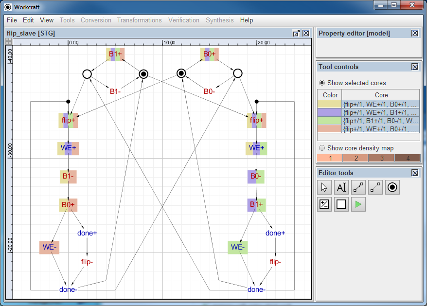
Automatic resolution inserts two new internal signals and yields the following complex-gate implementation with 18 literals:
[WE] = B0' csc1' + B1' csc0'; [done] = B0 csc1' + B1 csc0' + WE flip'; [csc0] = B0' csc0 + csc1' + flip'; [csc1] = B1' csc1 + csc0' + flip';
Alternatively, one can resolve some of the conflicts using innocuous CRs as shown below:
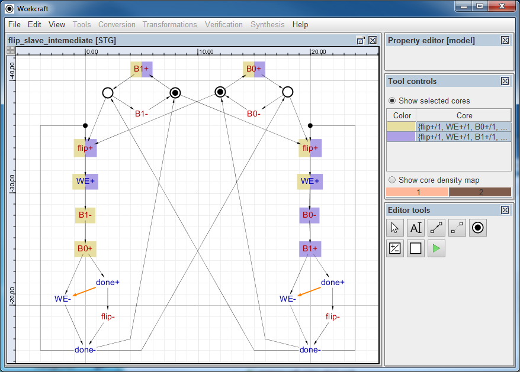
The above STG still has some encoding conflicts, but they can be resolved by inserting a single signal, yielding the following complex-gate implementation with 18 literals:
[WE] = done' (B1' flip + csc0' + WE); [done] = WE (B1 csc0 + done) + B0 csc0' + flip done; [csc0] = csc0 (WE + B0) + done + flip';
However, by vigorously applying “understanding of the system” and “creativity”, the designers of this SRAM controllers observed that two signals in the environment, D0 and D1, can help the implementation to trace its current state and get rid of the encoding conflicts (in fact, any of these signal would have been sufficient, but it is better to include them both for the reasons explained below). The STG had to be manually restructured to include these two signals:
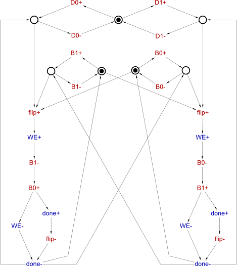
This STG is free from encoding conflicts, and yields the following implementation with 11 literals:
[WE] = flip (D0' B1' + B0' D0); [done] = (WE + flip) (D0 + B1) (B0 + D0');
Furthermore, one can simplify this implementation by applying two innocuous CRs as shown below. Note that these CRs are used not for conflict resolution, but for simplifying the implementation to help with subsequent technology mapping.
The resulting complex-gate implementation has only 8 literals:
[WE] = done' flip; [done] = (WE + flip) (D0 + B1) (B0 + D0');
Note that D1 is not used in this implementation. However, one can deploy it instead of D0', getting rid of the inversion that is likely to be finally mapped to an inverter with a timing assumption on its delay:
[WE] = done' flip; [done] = (WE + flip) (D0 + B1) (B0 + D1);
Note that this manual modification of the circuit has to be formally verified against the STG using Verification→Conformation, deadlock and hazard (reuse unfolding) [MPSat] menu item.
Considerations when adding extra inputs:
- no new signals to implement – the extra signals are already implemented in the environment;
- not clear how to choose the new inputs;
- need to re-design the STG, often manually, changing the contract with the environment.
Relative timing assumptions
Severity level:
“This event will happen faster than that one”
Relative vs. absolute timing assumptions, and their robustness
Break speed-independence, and generally problematic
Similar to concurrency reductions, but the introduced arcs are special, in particular they don't trigger signals
Can “delay” inputs
[VME example with TA delaying an input]
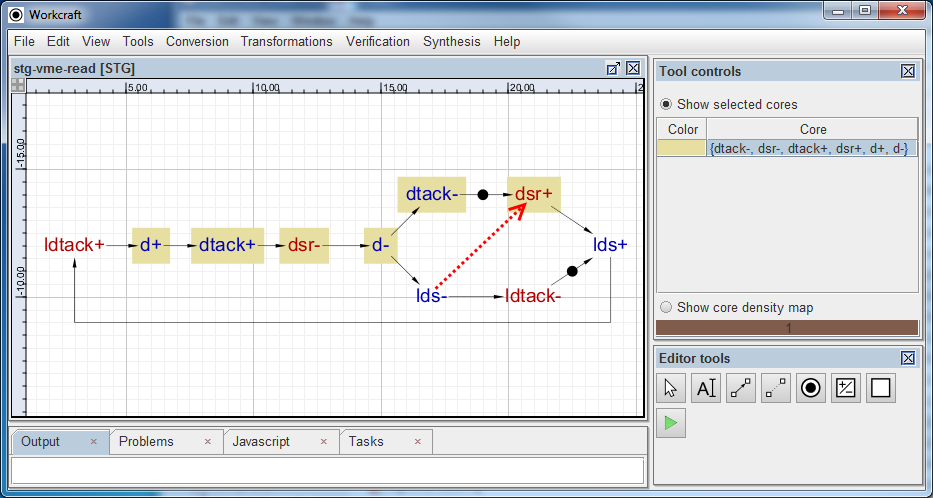
[State graph for the above]
Considerations when using timing assumptions:
- no new signals to implement;
- reduced state graph and so more don't-cares in minimisation tables, which may result in a better implementation;
- break speed-independence of the circuit, so inherently fragile due to variability (manufacturing, temperature, voltage, etc.);
- require deep understanding of theory and the circuit's behaviour;
- introduce place & route constraints, and need extensive validation.
Solutions
Download all the Workcraft models discussed in this section here:
<wrap download>{{CSC-resolution.zip|CSC resolution models}}</wrap>
Details to be added.